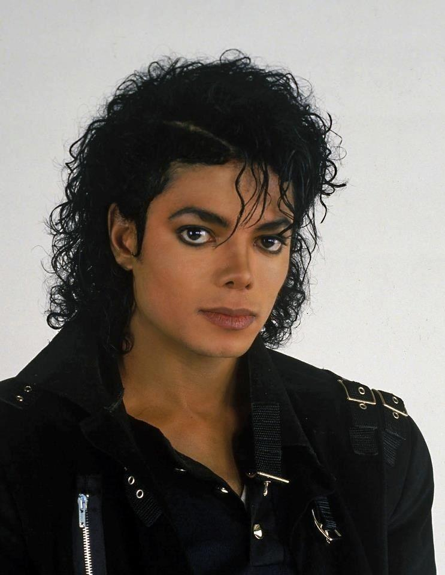

Michael Jackson was one of the most influential entertainers in history. Beginning his career with The Jackson 5, he became a worldwide icon through his extraordinary voice, creativity, and unforgettable performances.
His albums Off the Wall, Thriller, Bad, and Dangerous transformed pop music. Thriller remains the best-selling album of all time and revolutionized music videos forever.
Beyond music, Jackson supported numerous humanitarian causes and inspired millions with his passion, innovation, and dedication to excellence.
His legacy continues through timeless songs, legendary dance moves like the Moonwalk, and an influence that still shapes artists around the world.
Joined The Jackson 5.
Released Off the Wall.
Thriller became the best-selling album ever.
Co-wrote "We Are the World."
Released Dangerous.
His legacy continues to inspire millions worldwide.
“The greatest education in the world is watching the masters at work.”— Michael Jackson